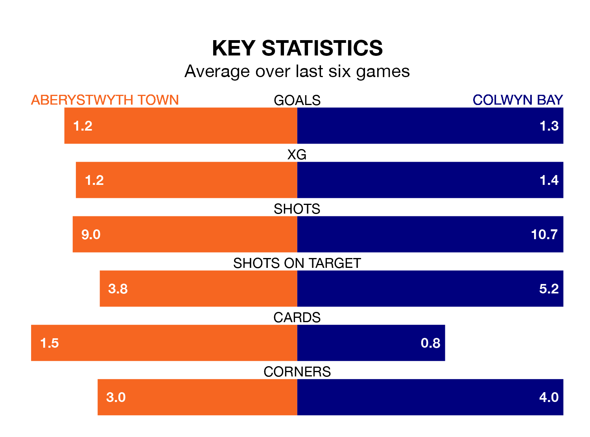

Colwyn Bay travel to Park Avenue for Friday's late match against Aberystwyth Town looking to bounce back from defeat last time out in the Welsh Premier League.
Colwyn Bay, who sit zero in the league after 23 games, fell to a 2-1 home defeat to Penybont on February 3.
They face an Aberystwyth side who picked up a win in their last match, a 1-0 victory against Haverfordwest County, and who sit zero in the table.
Aberystwyth are in mixed form in the Welsh Premier League, with two wins and a draw from their last six games.
With no wins and six losses over that period, Colwyn Bay's form is much worse – they have taken no points from 18, compared to Town's seven.
With 19 goals in 23 games so far this season, the Seasiders are the league's-4th-lowest scorers with 0.8 goals per game. And they are conceding more than average, letting in 46 goals at a rate of 2.0 per game.
The away side are also below average scorers, with 1.2 goals per game, compared to a league average of 1.5. They have conceded 2.2 goals per game.
Over the last two years, Aberystwyth and Colwyn Bay have played each other twice. They won one each.
Their last meeting was on January 5, when Aberystwyth won 1-0 at home.
Updated: 10:28 (UTC), 06/02/24